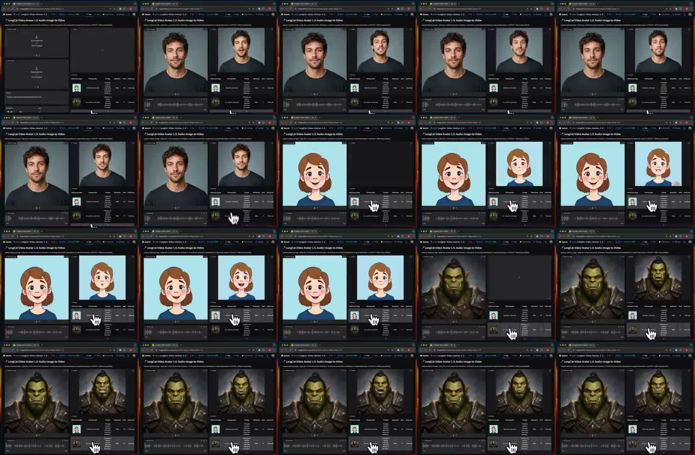
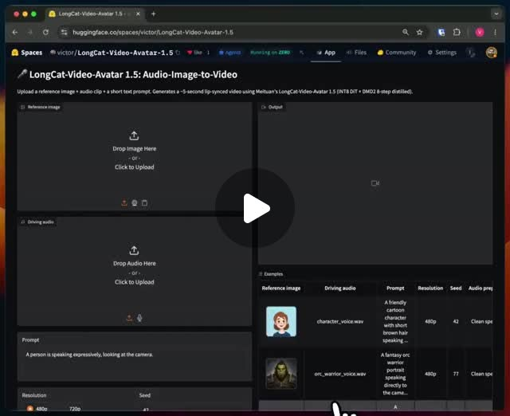

X｜Fran Pradas：LongCat-Video-Avatar 免費開源 talking avatar 示範

Fran Pradas（@franpradasAI）在 X 以西文分享 LongCat-Avatar，稱「上傳一張照片與一段音訊，就能得到可維持數分鐘的說話影片」，並強調它免費、開源。貼文附 19.8 秒影片，畫面像是在瀏覽器介面中測試 LongCat-Video-Avatar 1.5 Audio-Image-to-Video：可見真人男性、卡通女孩與獸人角色範例，右側輸出影片呈現口型與表情變化，屬於音訊驅動 talking avatar demo。
與既有 KB 條目的關係
本知識庫已有 `ComfyUI-LongCat-Avatar｜LongCat-Video-Avatar 1.5 的 ComfyUI 節點與 CUDA/Mac 限制`。那篇重點是 ComfyUI custom node 與安裝限制；本篇則歸檔 X 社群示範與官方 LongCat-Video-Avatar / 1.5 來源更新，因此不視為重複。
Threads 補充來源（2026-08-03）
Keith Rumjahn（@krumjahn）在 Threads 轉貼同一個 `meituan-longcat/LongCat-Video` repo，主張「一張照片 + 音訊」即可生成 talking avatar 影片，且不用訂閱。本文將它併入既有 LongCat-Video-Avatar 條目，因為核心專案與能力相同。

這則 Threads 的值得保留之處是社群反應也補上了採用風險：留言提醒 LongCat 是美團團隊開發，不是匿名個人義工；也有人指出本地一般電腦未必適合、設備要求高，另有使用者提到口型誇張仍需調整。這些觀察能幫助避免把「開源免費」誤解成「每個人都能零成本穩定商用」。
官方來源查核
- `MeiGen-AI/LongCat-Video-Avatar` 專案頁描述 LongCat-Video-Avatar 是 unified model，可做 expressive and highly dynamic audio-driven character animation。
- README 說明支援 Audio-Text-to-Video、Audio-Text-Image-to-Video 與 Video Continuation，並兼容 single-stream / multi-stream audio inputs。
- `meituan-longcat/LongCat-Video` GitHub repo 採 MIT License；2026-08-03 GitHub API 快照約 6,437 stars、1,086 forks。README 宣布 LongCat-Video-Avatar-1.5：強調更準 lip sync、temporal stability、long-video generation、stylized domains、single/multi-stream audio inputs，以及 8-step generation。
- 專案頁 `LongCat-Video-Avatar-1.5` meta description 也稱其為 open-source audio-driven video generation model with stronger stability, lip-sync accuracy, consistency, and fast 8-step generation。
可教學重點
- Talking avatar 已從閉源 SaaS 逐步擴展到開源模型與 ComfyUI 生態。
- LongCat 類工具的核心輸入是：身份參考圖 + 音訊 + 可能的文字/影片延續條件。
- 課堂可以比較 HeyGen / D-ID / Synthesia 類 SaaS 與 LongCat 類開源流程：成本、品質、硬體、可控性、部署難度與授權風險。
- 影片 demo 適合做「能力雷達」歸檔，但不應直接當作所有角色、所有語言、所有長度都能穩定生產的證據。
風險與限制
- 貼文中的「免費」應理解為開源模型/權重可用，不代表雲端推論、GPU、整合工具或商業使用完全零成本。
- 音訊驅動人像影片涉及肖像權、聲音權、深偽標示、授權與平台政策。
- 長影片穩定性仍需實測；口型、手部、頭髮、背景與角色一致性都可能隨長度下降。
- 若使用第三方封裝網站，需查清是否為官方、是否保留上傳圖片/音訊，以及輸出影片授權。